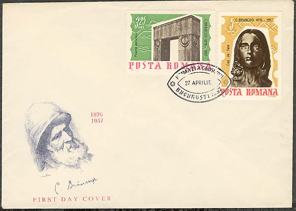
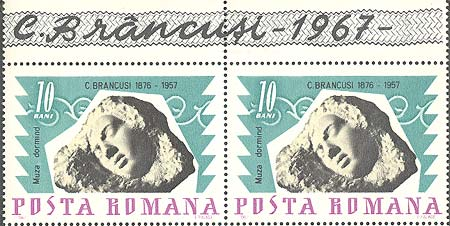
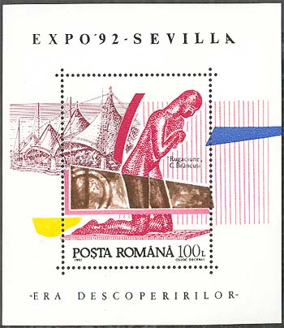
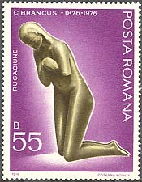

Constantin Brancusi
The Early Work
The sculptural bronze portrait named Vanity (Orgoliu In Romanian) is an early work of 1905-1906. Exposed at the Craiova Art Museum. Muzeul de Arta, Craiova, it is designed to achieve a calm and symmetrical construction; the peacefulness of the contours is only slightly disturbed by the girl’s locks as though ruffled by a faint breeze.
On the stamp, issued in a set of seven in 1957, and commemorating Brancusi's 10th anniversary of death, the work is named "Portret de fata", "Girl's Portrait" - what it certainly is. I would name it "Pride", the pride of an beautiful and, probably, intelligent girl.

In 1908, Brancusi carves the head of a sleeping woman. The delicate features, wrapped in peaceful light barely detach themselves from the block of marble where the traces of the chisel are discernible. We seem to witness the effort of shape straining to wrench itself out of the hard core of the material. Two years later, The Sleeping Muse (Muza dormind) performs the miracle: the head, greatly elongated, barely touches the surface of the base in a fragile equilibrium ; the muse dwells in a world apart, a world of her own, delivered from the material which created her. The sculpture of 1908 represents The Sleep, the one of 1910, The Dream.

The new trend in Brancusi's artistic concept, between 1906-1908, is revealed by another work of art, the significance of which has been widely debated by art critics, to wit The Prayer. More eloquently than in the series of Children Heads, this statue exhibits in its boldly simplified forms, the first signs of an artistic orientation that was to be a watershed in modern European sculpture. The tragic nobility in the attitude of the kneeling personage, its head simply bent down with reverence evokes grief with greater eloquence than any rhetorical declaration. The body is transformed into a symbol, stripped of its anatomic contingency, enveloped in a sort of "impalpable spiritual substance" as described by Edgar Papu.


Please point on stamps with the mouse for more information. For the main source of the presentation, please click here.

| Published:
05/20/2002. Revised:
11/08/06. Copyright © 2002 - 2006 by Victor Manta, Switzerland. All rights reserved worldwide. |